OFERTA ESPECIAL DISPONIBLE SOLO HOY
+120 ATLAS Visuales de Endodoncia Clínica
CON APERTURAS CORONARIAS, DIAGNÓSTICO PULPAR, LIMAS, IRRIGACIÓN Y ETAPAS CLÍNICAS ORGANIZADAS PARA QUE PUEDAS ESTUDIAR, REPASAR Y CONSULTAR
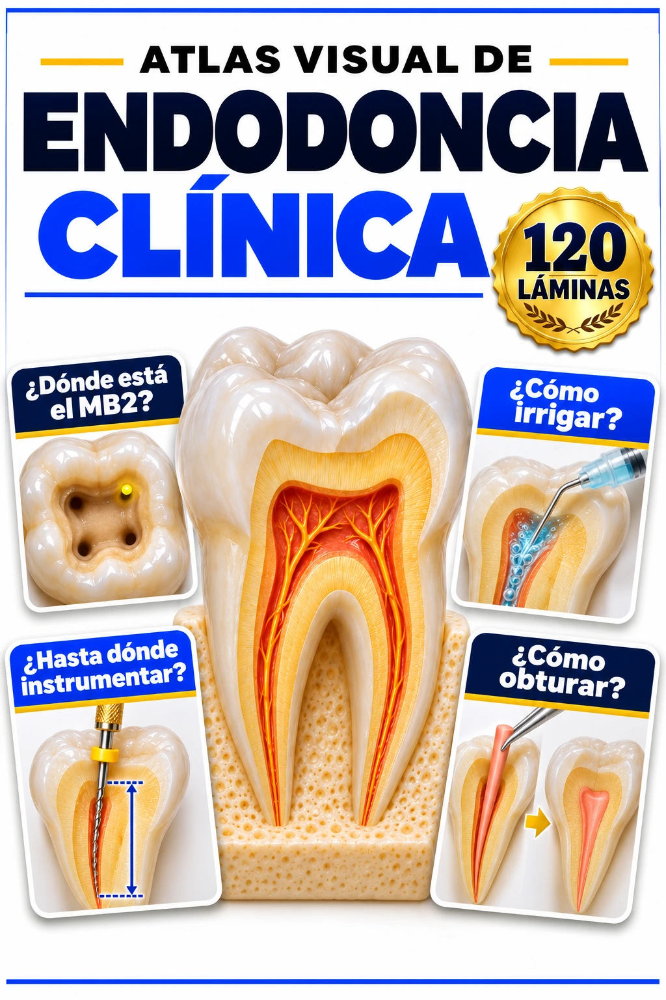
Ten en el celular +120 ATLAS visuales para comprender y consultar los principales contenidos de Endodoncia Clínica, incluyendo anatomía interna y apertura diente a diente, diagnóstico pulpar y periapical (AAE), aislamiento absoluto, odontometría, instrumentación manual y rotatoria, irrigación, medicación intracanal, obturación y manejo de accidentes.
Recibes todo inmediatamente en tu WhatsAppy en tu
WhatsAppy en tu correo electrónico
correo electrónico
MIRA POR DENTRO EL MATERIAL QUE VAS A RECIBIR
Vista previa de la biblioteca con +120 ATLAS Visuales de Endodoncia Clínica, organizados para que puedas visualizar rápidamente aperturas coronarias, anatomía interna, diagnóstico pulpar, calibres ISO de limas, protocolos de irrigación, secuencias clínicas y los principales conceptos del área.
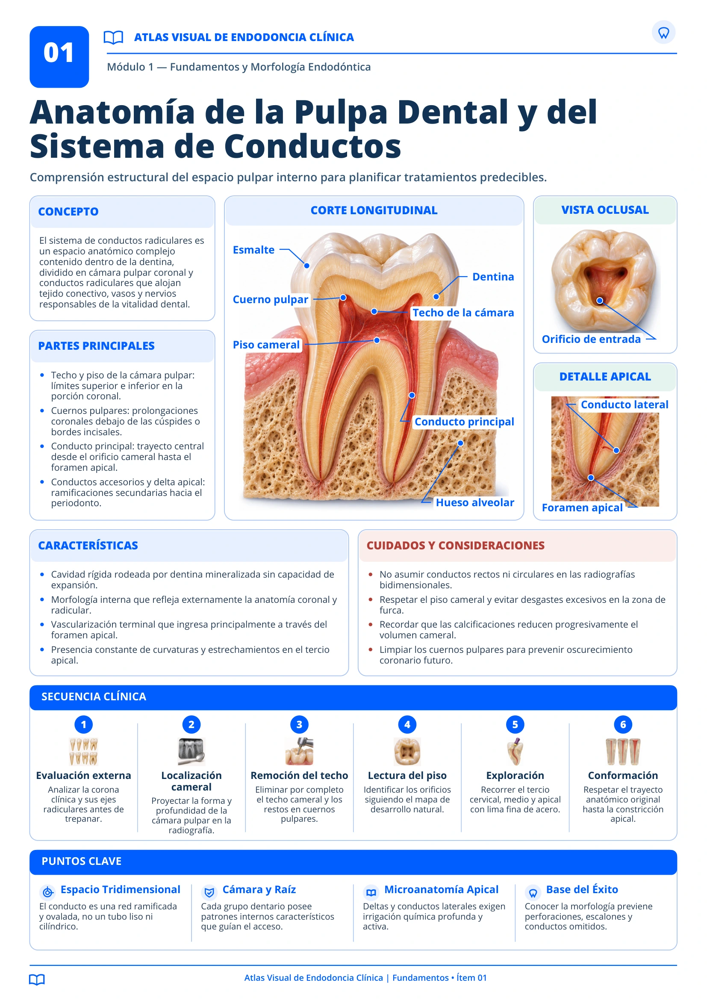
Basta de perder tiempo buscando la misma información en diapositivas, apuntes y PDFs diferentes.
Con el Atlas Visual de Endodoncia Clínica, encuentras rápidamente el tema que necesitas repasar y ya puedes consultar:
- Anatomía interna y apertura coronaria diente a diente
- Diagnóstico pulpar y periapical (Consenso AAE)
- Aislamiento absoluto y selección de grapas
- Odontometría electrónica (LEA) y radiográfica
- Clasificaciones importantes (Vertucci, Krasner-Rankow, Schneider)
- Instrumentación manual, rotatoria y reciprocante
- Protocolos de irrigación y medicación intracanal
- Técnicas de obturación y cementos biocerámicos
- Errores, accidentes y protocolos de rescate
- Resúmenes para consulta rápida en clínica

Solo tienes que abrirlo, encontrar el tema que necesitas y usar el ATLAS como referencia para estudiar, repasar o consultar antes de atender.
IDEAL PARA QUIEN ESTUDIA O ESTÁ COMENZANDO A PROFUNDIZAR EN ENDODONCIA CLÍNICA
Si eres estudiante de Odontología, recién graduado o estás comenzando tus prácticas clínicas en el área de Endodoncia, utiliza este material para:
- Repasar la forma de apertura coronaria y número de conductos antes de entrar a clínica o examen.
- Diferenciar con seguridad pulpitis reversible, irreversible, necrosis y periodontitis apicales.
- Identificar visualmente limas ISO por colores, fresas Gates-Glidden, Largo y grapas de aislamiento.
- Comparar técnicas Step-Back vs. Crown-Down e instrumentación rotatoria vs. reciprocante.
- Localizar conductos complejos como el MV2 en molares superiores o el segundo canal en incisivos inferiores.
- Dominar los protocolos de irrigación (NaOCl, EDTA, Clorhexidina) sin errores de interacción química.
- Organizar secuencias clínicas de odontometría, preparación y obturación que suelen quedar dispersas.
- Consultar clasificaciones (Vertucci, Krasner-Rankow, trauma IADT) sin buscar en libros extensos.
- Saber cómo prevenir y resolver escalones, perforaciones y fractura de instrumentos.
- Consultar rápidamente desde el celular minutos antes de atender a tu paciente.
Si te identificaste con al menos dos de estas situaciones, el Atlas Visual de Endodoncia Clínica fue organizado para facilitar tu rutina de estudio, repaso y práctica clínica.
¿CUÁNTAS VECES TE HAS CONFUNDIDO CON LA APERTURA, EL DIAGNÓSTICO PULPAR O LA SECUENCIA DE LIMAS Y HAS TENIDO QUE VOLVER A BUSCAR TODO OTRA VEZ?
⏰ Aprovecha la oferta por tiempo limitado
MIRA LO QUE ESTÁN DICIENDO SOBRE EL MATERIAL
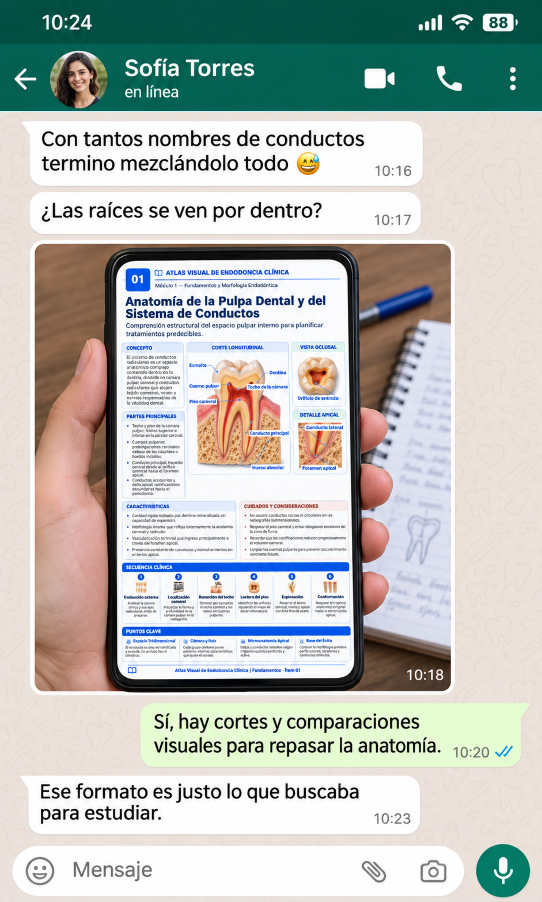

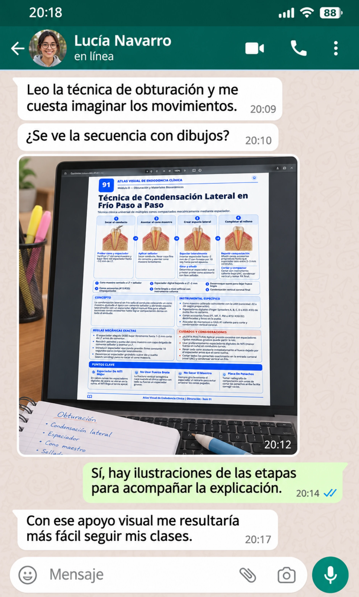

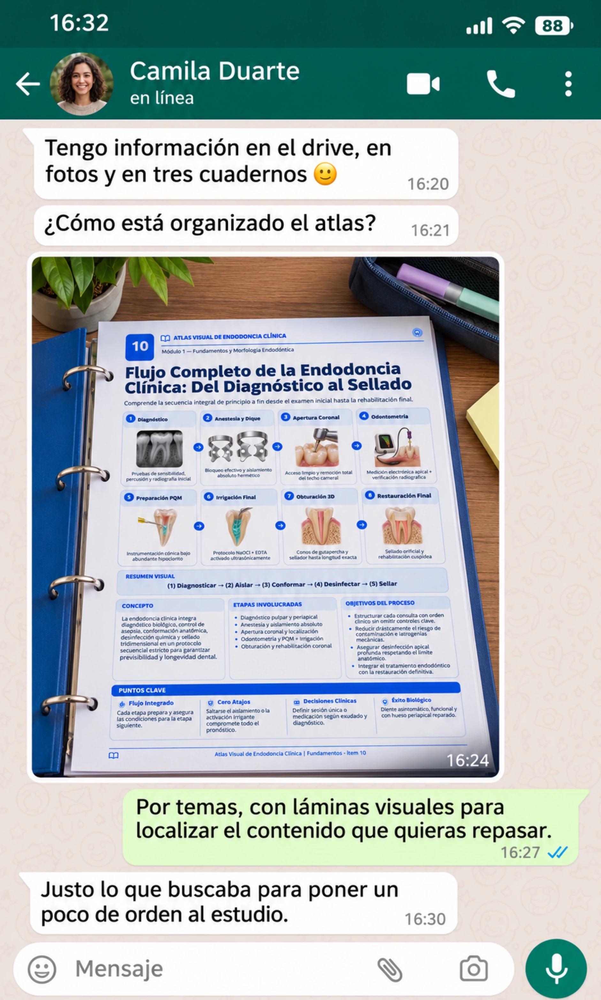
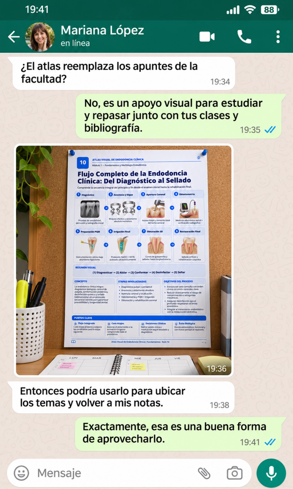

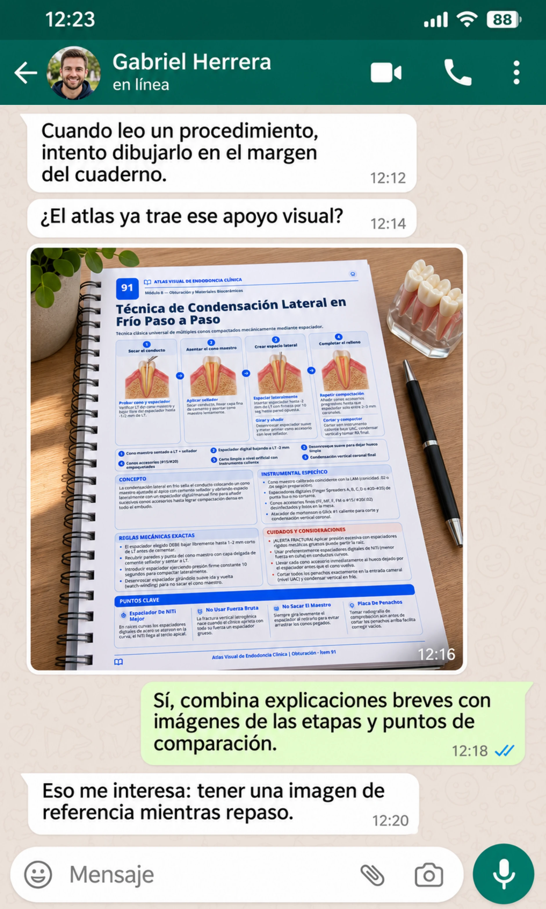


⚡ Acceso inmediato
MIRA TODO LO QUE VAS A RECIBIR
- +120 ATLAS Visuales de Endodoncia Clínica
- Contenido organizado en 10 módulos clínicos
- Anatomía de la cavidad pulpar y sistema de conductos
- Clasificación de Vertucci (Tipos I al VIII) e istmos
- Leyes de Krasner y Rankow para localizar conductos
- Diagnóstico pulpar y periapical (Consenso AAE)
- Pruebas térmicas, pulpómetro, percusión y Regla de Clark (SLOB)
- Anestesia en diente caliente y técnicas suplementarias
- Aislamiento absoluto, grapas y reconstrucción pre-endodóntica
- Manejo de urgencias endodónticas, drenaje y farmacología
- Apertura coronaria paso a paso en incisivos, caninos, premolares y molares
- Localización del conducto MV2 (MB2) y conductos en 'C'
- Odontometría electrónica (LEA), técnica de Ingle y constricción CDC
- Patencia apical, Glide Path, LAI y Lima Apical Maestra (LAM)
- Cinemática manual y Fuerzas Balanceadas de Roane
- Técnica Step-Back vs. Técnica Crown-Down
- Instrumentación rotatoria continua vs. reciprocante en NiTi
- Irrigación con Hipoclorito de Sodio, EDTA 17% y Clorhexidina 2%
- Activación ultrasónica pasiva (PUI), sónica y dinámica manual
- Medicación intracanal con Hidróxido de Calcio Ca(OH)₂ y pastas
- Prueba del cono maestro, condensación lateral, vertical caliente y cono único
- Cementos biocerámicos (MTA, Biodentine y premezclados)
- Apexogénesis, apexificación, revascularización y traumatología dental (IADT)
- Reabsorciones, diente fisurado, lesiones endo-perio y endopediatría
- Retratamiento, remoción de pernos, perforaciones, escalones y cirugía apical
- Acceso inmediato y vitalicio desde celular, tablet o computadora
- Archivos preparados en alta definición para lectura digital e impresión
Y NO TERMINA AHÍ…
USTED ADEMÁS RECIBE
🎁 3 BONOS EXCLUSIVOS
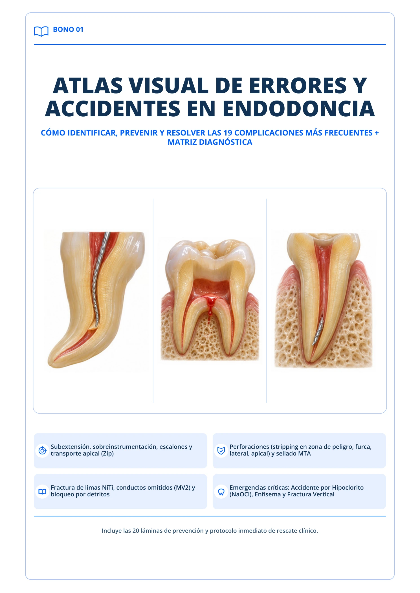
ATLAS VISUAL DE ERRORES Y ACCIDENTES EN ENDODONCIA
Una selección de láminas dedicada a cómo prevenir y resolver escalones, perforaciones, transporte apical, fractura de limas y extrusión de hipoclorito.
Valor: $24GRATIS
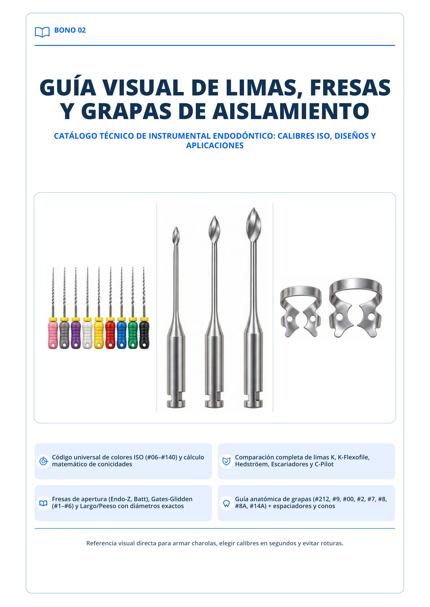
GUÍA VISUAL DE LIMAS, FRESAS Y GRAPAS DE AISLAMIENTO
Una biblioteca complementaria para identificar por colores y calibres ISO las limas manuales, rotatorias, fresas Gates/Largo/Endo-Z y la grapa exacta para cada diente.
Valor: $21GRATIS
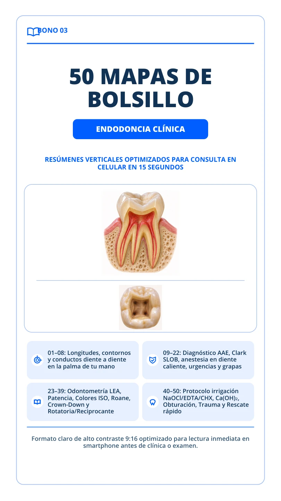
50 ATLAS DE BOLSILLO DE ENDODONCIA
Tarjetas verticales resumidas y adaptadas para la pantalla del celular con aperturas, longitudes, diagnóstico y protocolos rápidos.
Valor: $15GRATIS
⏰ ÚLTIMA OPORTUNIDAD — LA OFERTA TERMINA HOY
Elija la opción ideal para usted
PLAN BÁSICO
50 ATLAS Esenciales de Endodoncia Clínica
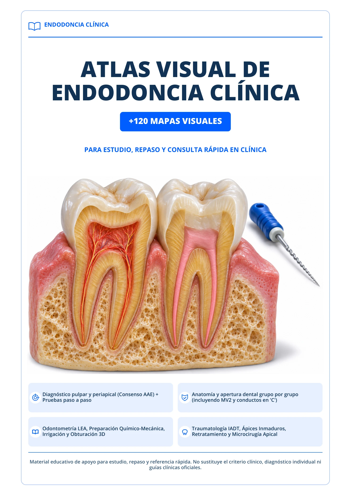
- 50 ATLAS Esenciales de Endodoncia Clínica
- Fundamentos, diagnóstico pulpar y aperturas coronarias
- Anatomía interna y localización de conductos
- Material digital
- Acceso vitalicio
- Garantía de 7 días
- ✕ No incluye los 3 bonos
- ✕ No incluye la biblioteca completa (+120 ATLAS)
De $27,90
$7,90
O en hasta 3 cuotas con tarjeta
Usted ahorra $23,00
QUIERO EL PLAN BÁSICOEl 92% de las personas aprovecha la oferta a continuación:
PLAN COMPLETO
+120 ATLAS Visuales de Endodoncia Clínica con aperturas coronarias, diagnóstico, limas, irrigación, obturación y etapas organizadas para estudio y consulta
- Todo lo del Plan Básico
- +120 ATLAS Visuales de Endodoncia Clínica
- Anatomía pulpar, Vertucci, istmos y conductos en 'C'
- Diagnóstico pulpar y periapical (Consenso AAE)
- Anestesia en diente caliente y técnicas suplementarias
- Aislamiento absoluto, grapas y reconstrucción pre-endo
- Apertura coronaria diente a diente (anteriores, premolares y molares)
- Localización del conducto MV2 (MB2) y leyes de Krasner-Rankow
- Odontometría electrónica (LEA), Ingle, patencia y Glide Path
- Step-Back vs. Crown-Down y Fuerzas Balanceadas de Roane
- Instrumentación rotatoria continua vs. reciprocante en NiTi
- Irrigación (NaOCl, EDTA 17%, Clorhexidina 2%) y activación PUI
- Medicación intracanal con Ca(OH)₂ y sellado temporal doble
- Obturación lateral, vertical caliente, cono único y biocerámicos
- Traumatología dental (IADT), ápices inmaduros y revascularización
- Retratamiento, perforaciones, escalones y cirugía apical
- Biblioteca organizada por temas para celular e impresión
- Acceso inmediato y vitalicio
- 🎁 BONO 01 — Atlas Visual de Errores y Accidentes en Endodoncia
- 🎁 BONO 02 — Guía Visual de Limas, Fresas y Grapas de Aislamiento
- 🎁 BONO 03 — 50 ATLAS de Bolsillo de Endodoncia
DE $27,90
Hoy por solo:
$13,90
O en hasta 6 cuotas con tarjeta
Ahorras $16,00
QUIERO EL PLAN COMPLETO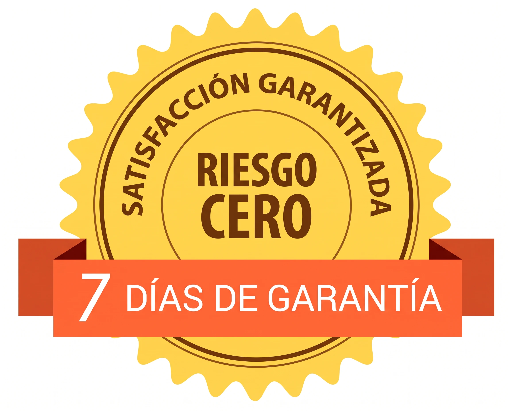
🛡 GARANTÍA DE 7 DÍAS
Tienes 7 días de garantía. Tras la compra, podrás acceder y conocer el material. Si consideras que el contenido no corresponde a lo presentado en esta página, podrás solicitar el reembolso dentro del plazo informado por la plataforma de pago.
COMPRA AHORA Y RECIBE TU ACCESO INMEDIATAMENTE
1. Realiza tu compra
Elige el plan deseado y finaliza tu pago de forma segura.
2. Recibe el material
Tras la confirmación del pago, recibirás las instrucciones de acceso en el WhatsApp y en el correo electrónico proporcionados durante la compra.
3. Encuentra el tema
Abre el Atlas Visual y elige el contenido de Endodoncia Clínica que deseas estudiar o repasar.
4. Consulta y repasa
Visualiza aperturas, diagnósticos, limas, irrigantes y secuencias de manera organizada siempre que necesites repasar el tema.
PREGUNTAS FRECUENTES
¿Necesito tener experiencia previa en Endodoncia?
No. El material fue organizado para facilitar la consulta tanto de quienes están teniendo sus primeros contactos con la preclínica y clínica de Endodoncia como de quienes ya estudiaron los contenidos y desean repasar rápidamente.
¿Sirve para estudiantes de Odontología?
Sí. El Atlas fue desarrollado principalmente como material educativo visual de consulta rápida para estudiantes de Odontología en preclínica, clínica y exámenes.
¿Sirve para recién graduados?
Sí. Los recién graduados que desean repasar aperturas coronarias, diagnóstico, protocolos de irrigación o manejo de urgencias pueden utilizarlo como biblioteca de consulta rápida.
¿El contenido es un curso en video?
No. El Atlas Visual no es un curso en video. Es una biblioteca digital de +120 láminas e infografías clínicas listas para estudio, repaso y consulta en segundos.
¿Muestra la apertura coronaria y anatomía de cada diente?
Sí. Incluye láminas específicas diente por diente (incisivos, caninos, premolares y molares superiores e inferiores), con longitudes promedio, número de conductos, forma de contorno y localización del MV2.
¿Incluye los criterios de diagnóstico pulpar y periapical?
Sí. Cuenta con un módulo completo basado en la clasificación de la AAE (pulpa normal, pulpitis reversible, irreversible, necrosis, periodontitis apicales y abscesos) y pruebas clínicas.
¿Explica las técnicas de instrumentación e irrigación?
Sí. Encontrarás comparaciones visuales entre Step-Back y Crown-Down, fuerzas balanceadas, sistemas rotatorios vs. reciprocantes, e irrigación con NaOCl, EDTA y clorhexidina.
¿Muestra las limas ISO, fresas y grapas de aislamiento?
Sí. Tanto en el Atlas como en el Bono 02 tienes el catálogo visual con colores y calibres ISO de limas, fresas Gates-Glidden, Largo, Endo-Z y la numeración de grapas para cada diente.
¿Aborda errores y accidentes como escalones o perforaciones?
Sí. El Plan Completo incluye láminas sobre accidentes y además el Bono 01 dedicado íntegramente a prevenir y resolver escalones, perforaciones, fractura de limas y extrusión de hipoclorito.
¿Puedo acceder desde el celular?
Sí. Puedes consultarlo desde el celular, la tablet o la computadora en cualquier momento.
¿Puedo imprimir el material?
Sí. Los archivos están en alta resolución y listos para que puedas imprimir las páginas que desees para uso personal.
¿Cómo recibo mi acceso?
Inmediatamente después de la confirmación del pago, recibirás las instrucciones de acceso en tu correo electrónico y WhatsApp registrados en la compra.
¿El acceso es vitalicio?
Sí, tienes acceso vitalicio a los archivos incluidos en el plan adquirido y puedes descargarlos en tus dispositivos.
¿Existe alguna mensualidad?
No. Es un único pago sin cobros recurrentes.
¿El material sustituye clases, libros u orientación docente?
No. El Atlas Visual tiene finalidad exclusivamente educativa y complementaria, y no sustituye clases, literatura científica, protocolos clínicos oficiales, orientación docente ni el juicio clínico profesional.
¿Existe garantía?
Sí. Dispones de 7 días de garantía incondicional para conocer el material y solicitar el reembolso a través de la plataforma de pago si no estás satisfecho.
COMIENZA AHORA
Ten en tu celular una biblioteca con más de 120 ATLAS Visuales de Endodoncia Clínica, con aperturas coronarias, diagnóstico, limas, irrigación, obturación y etapas organizadas para que estudies, repases y consultes rápidamente siempre que lo necesites.
Valeria M.
Ciudad de México, CDMX
Acaba de garantizar el acceso al Atlas Visual de Endodoncia Clínica. Compra completada ahora.
hace 1 min